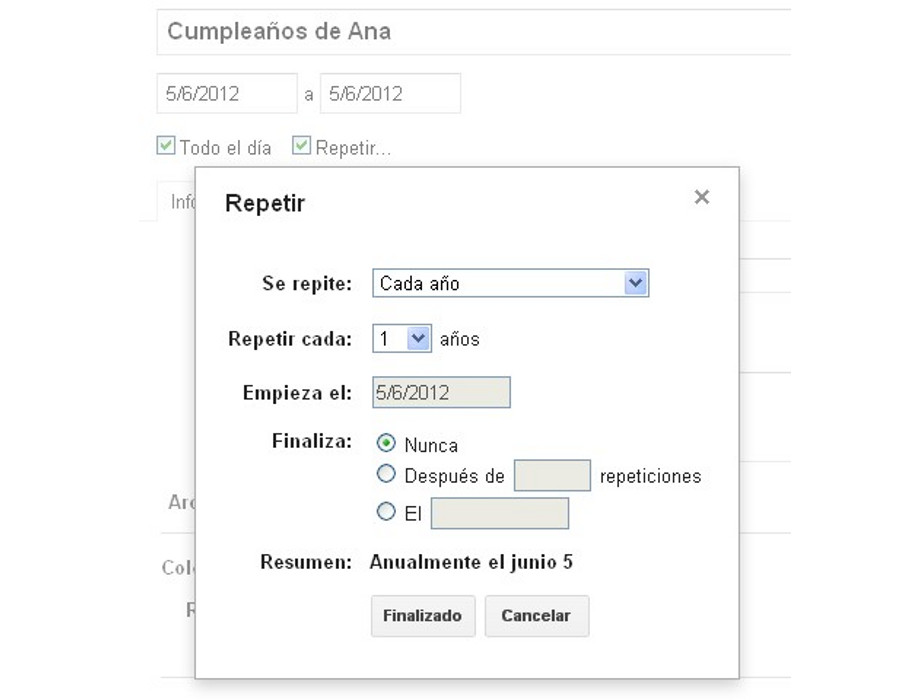
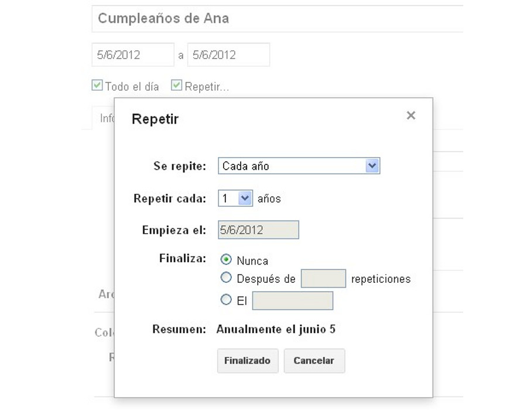
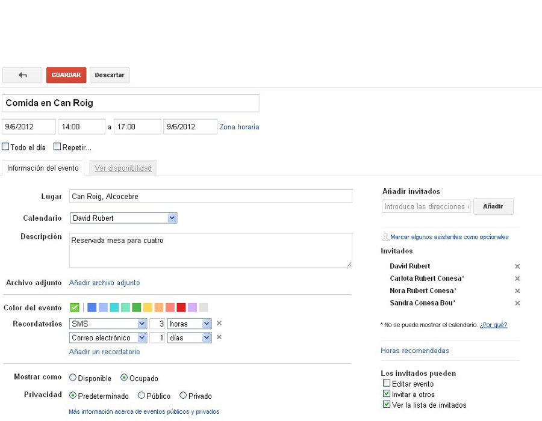
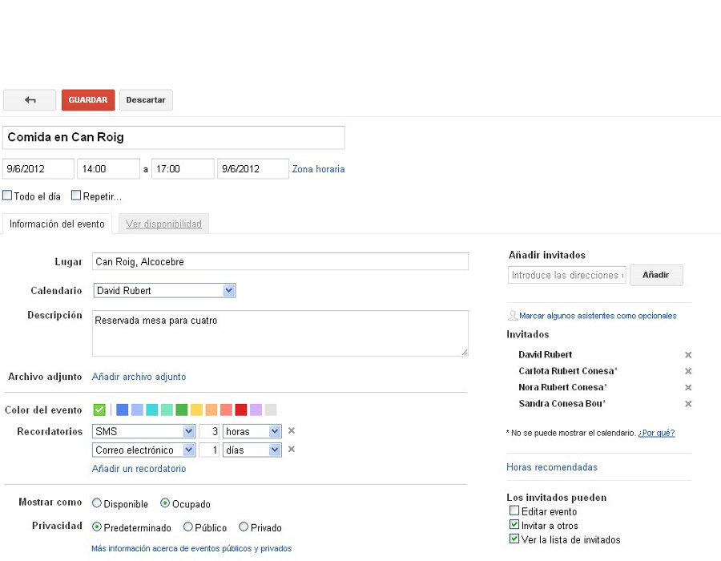

Gestión eficaz del tiempo en el trabajo
calendar
Gestión avanzada
Apreta la tecla → para avanzar.

La funcionalidad básica de Google Calendar ya la tenemos clara, veamos ahora algunos detalles importantes que nos facilitarán el uso del calendario.
Veamos algunos ejemplos de eventos más avanzados, donde se utilicen las funciones más complejas del sistema de eventos, normalmente relacionadas con la repetición.
 

 


Cambia de foto con las teclas: ↑ y ↓